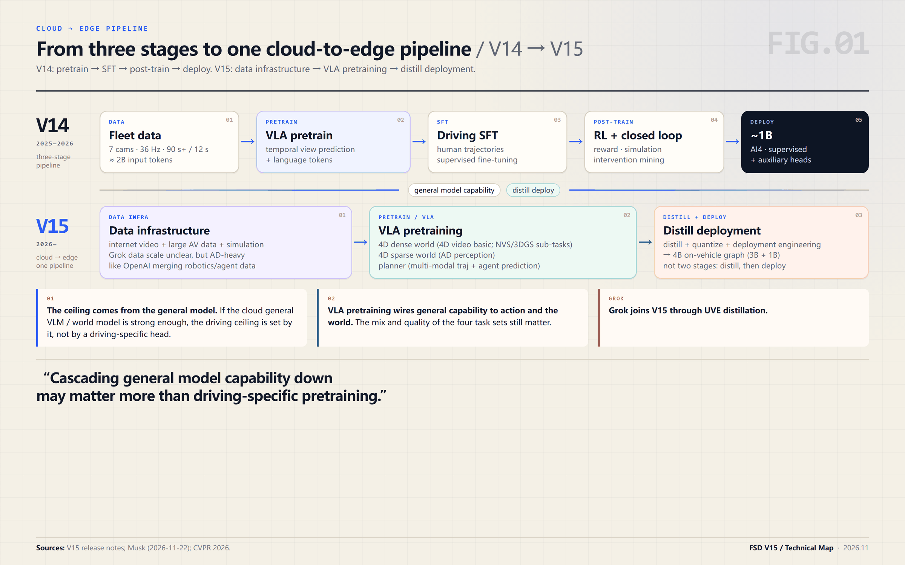
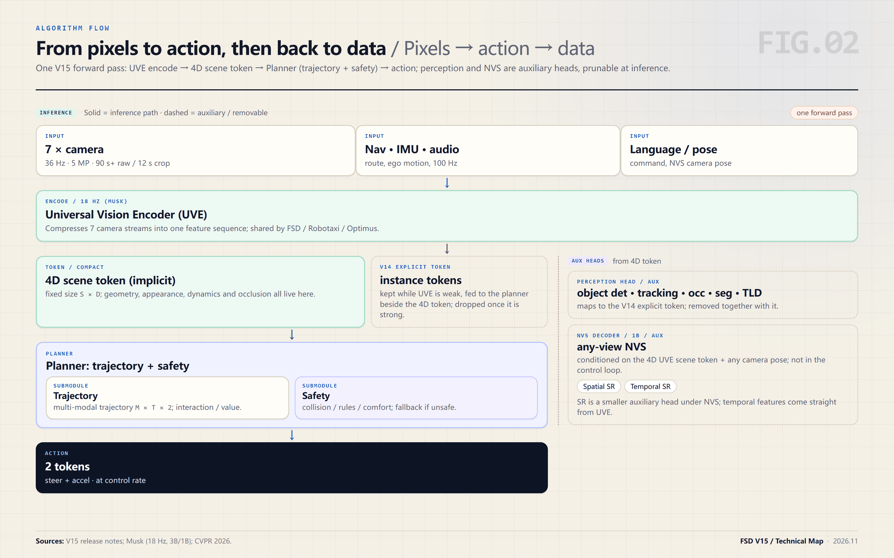
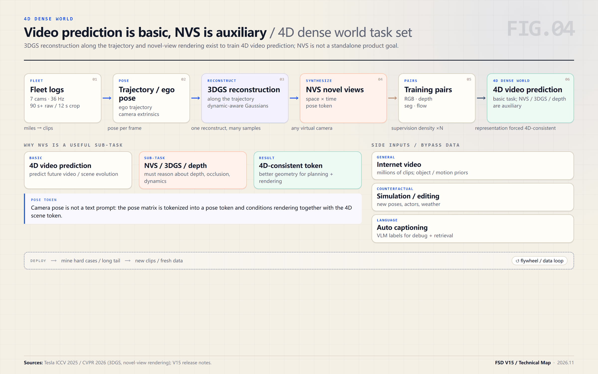
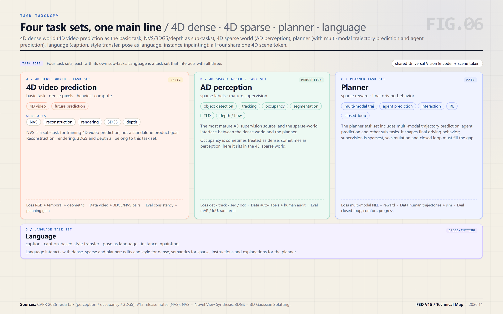
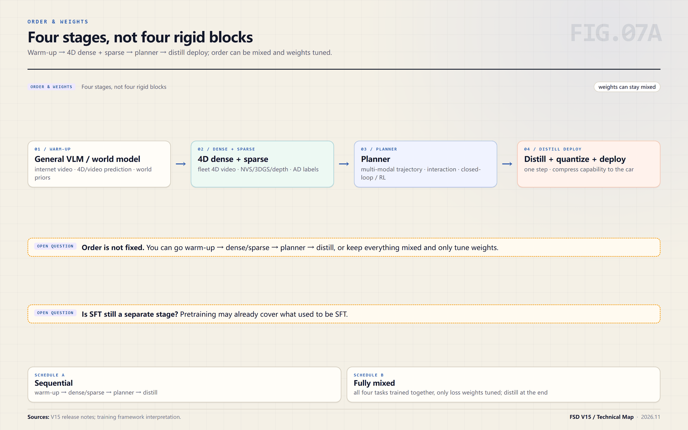
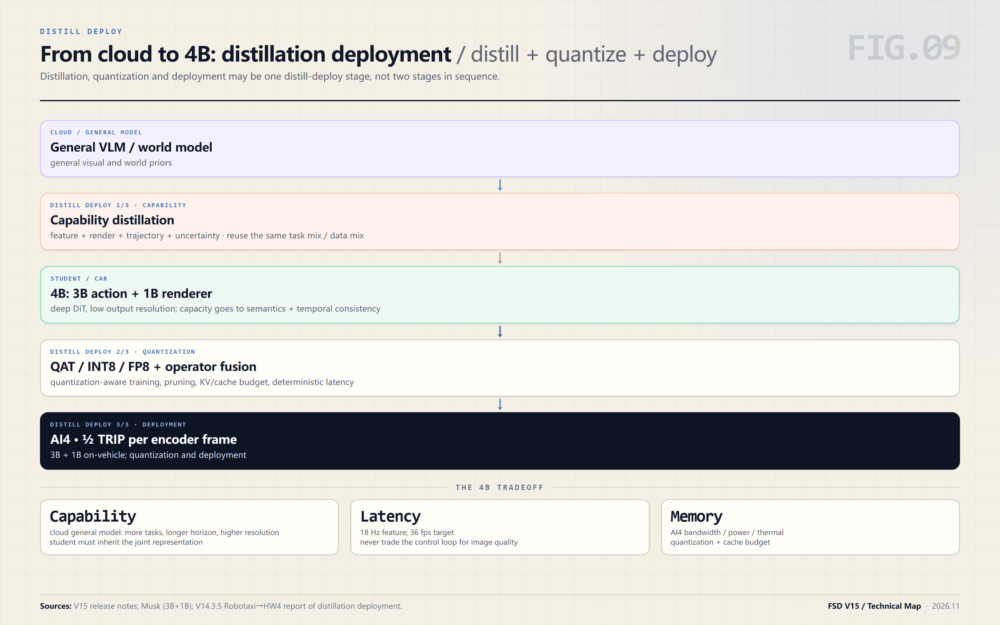
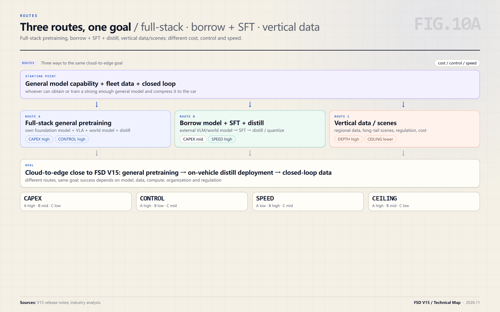
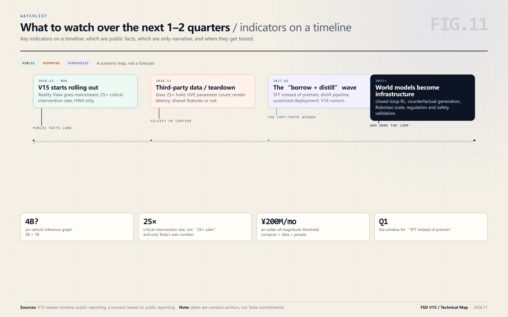

- After FSD V15 rolled out over the weekend, many people watched a lot of videos and compared notes; some consensus emerged.
- This is a narrow look at V15's improvements and implementation.
- The article focuses on framework design and implementation; for the surface-level experience, watch YouTube.
- These are personal notes for record and reference only.
- Any resemblance is accidental.
- If readers disagree, they are right.
- If the implementation happens to resemble some company's approach, it is pure luck.
An outside reading
What changed on the surface
- A new vision encoder, which Musk calls Universal Vision Encoder (UVE) and which is shared across FSD, Robotaxi, and Optimus.
- Reality View replaces the old visualization with generated novel views.
- Musk mentions a 3B action model + 1B renderer, 18 Hz features, and a 36 fps target.
General pretraining determines driving capability
- V15 connects general Vision-Language Model (VLM) pretraining, VLA (Vision-Language-Action) pretraining, and on-car distillation deployment into one line. General large-model pretraining determines V15's driving capability;
- its significance lies less in “another driving-specific pretrain task” and more in the transfer of general-model capability to the edge.
What shipped
What changed in the driving net
- New vision encoder; better signs, small animals, road debris, chains, potholes, deep water; school-zone/weather speed control; slowdown before speed cameras; bike-rack mode; DMS with hats/sunglasses; navigation and parking-route learning.
- Tesla claims a 25× improvement in critical intervention rate (release-note coverage), but the claim needs third-party data.
Generative reality on the center screen
- A virtual camera above the car renders the surrounding world in real time.
- It is not camera replay and not a game-engine asset library.
- Tesla calls it “novel view synthesis,” produced by the same end-to-end driving model while it drives.
- Tap a point to set a target; full-screen or split-screen.
The new encoder is trained on millions of internet videos and shared across FSD, Robotaxi, and Optimus. General large-model pretraining determines V15's driving capability.
From V14 to cloud-to-edge
- V14 uses three stages: pretrain → SFT → post-train.
- They belong to one model, not three separate models.

The dimensionality problem V14 faced
- By Tesla's public ICCV 2025 / CVPR 2026 framing (CVPR 2026 talk write-up): 7 cameras × 36 Hz × 5 MP; raw clips are 90 s+, cropped to ~12 s for training, and 5×5-pixel patches give roughly 2 billion input tokens; add navigation, 100 Hz kinematics, and 48 kHz audio.
- The output is just 2 tokens: steering and acceleration.
- End-to-end learning is the search for a causal map from 2B to 2.
- V14 therefore injects a large set of interpretable intermediate signals: 3D occupancy and flow, vehicles/VRUs, traffic lights and signs, road boundaries and lanes, speed limits, interaction probabilities, and natural-language reasoning.
- They are both supervision and a handle for safety review.
V14's compact token
- V14's compact token has two parts: an implicit scene token and some explicit instance tokens (cars, VRUs, traffic lights, lanes).
- The trajectory head cross-attends to these tokens and outputs a multi-modal trajectory.
Why it worked
- Explicit instances are interpretable, easy to supervise, and easy to wrap in safety rules.
- SFT compresses human value judgments into the policy.
- Post-train fixes rewards with RL/closed-loop.
- Each stage had a job.
What it costs
- The instance list is lossy: it represents the scene as a set of instances, so non-instance semantics are lost.
- The scene token is lossless in reconstruction.
V14's real legacy is intermediate supervision, not a particular head: make the black box emit inspectable things before it emits an action.V14's real legacy is intermediate supervision, not a particular head.
V15 changes the interface: instance list → 4D scene token, next-frame prediction → novel-view rendering, three stages → general pretrain + distillation deployment.

The pipeline on its own: VLM pretraining → VLA pretraining → distillation deployment
The pipeline has three steps. Our guess:
- Data infrastructure / VLM pretraining (cloud): internet video + large amounts of autonomous-driving data + simulation. Grok's training-data scale is large, and it includes large amounts of driving data; this is analogous to OpenAI folding its robotics team into agents to integrate data. Universal Vision Encoder (UVE) may be part of Grok, possibly after multiple stages of distillation.
- VLA pretraining: VLA is Vision-Language-Action, connecting vision/language to action; it contains planner sub-tasks such as multi-modal trajectory prediction and agent prediction. This layer decides whether general capability becomes driving behavior.
- Distillation deployment (car): distill the cloud teacher into a 4B on-car graph (about 3B action + 1B renderer), then quantize, prune, fuse operators, and deploy on AI4. Distillation and deployment are one step, not “distill first, then deploy.”
One encoder, two decoding paths
V15 architecture: a shared Universal Vision Encoder (UVE), a ~3B action model, a ~1B renderer, and 18 Hz (Musk).

- Forward structure: input → UVE → tokenizer → four task sets in training; at inference, only trajectory + lightweight NVS.
- The 3B action model and 1B renderer are both distilled from UVE.

UVE: Universal Vision Encoder, a general “visual clock”
- UVE (Universal Vision Encoder) emits features at 18 Hz.
- FSD, Robotaxi, and Optimus share the encoder.
- The 18 Hz figure comes from Musk's posts.
- It is pretrained on millions of internet videos for general vision, then aligned to driving on fleet data.
- The encoder becomes sensitive not only to “driving-relevant objects,” but to the general world—materials, lighting, animals, debris, occlusion.
Distillation: how action and renderer share UVE
- The 3B action model and the 1B renderer are distilled from Universal Vision Encoder (UVE) and share the same 4D scene token.
- The renderer conditions on that scene representation to generate a novel view.
- As a result, rendering loss flows back into UVE, forcing the features to satisfy two things at once:
- Action discriminability: details that should change braking cannot be thrown away;
- Rendering consistency: occlusion, depth, dynamics, and lighting must be coherent from a new viewpoint.
- That is what “shared representation” buys over “add another generative model”: it does not just add an output;
- it adds a constraint.
The 1B renderer: what conditional mean-flow means
- The renderer is a 1B conditional mean-flow model (a flow-matching variant that learns the average velocity field over an interval).
- It is conditioned on the 4D UVE scene token and renders a novel view from any camera pose.
- The “previous frame” is not renderer output; it is the 4D scene token formed by fusing the previous scene token with the current UVE frame.
- The model predicts the change in token space, then decodes the current view.
- Musk mentions a 36 fps target;
- the renderer generates single frames or small chunks differentially.
- “½ TRIP” means half of one TRIP accelerator, not half of an AI4 chip.
- The only usable statement is that it spends spare compute, not the control loop's budget.
On-car inference graph: 3B action + 1B renderer = 4B
On-vehicle action model
Size: 3B
Evidence: Musk post
Note: Outputs trajectory/control with auxiliary heads.
On-vehicle renderer
Size: 1B
Evidence: Musk post
Note: NVS decoder, conditional mean-flow.
On-vehicle graph
Size: 4B
Evidence: Sum
Note: 3B + 1B = 4B.
Beyond driving-specific pretraining
V15's change lies not in “a few more driving-pretrain tasks,” but in general VLM pretraining: general large-model pretraining determines V15's driving capability, and enters the car through VLA pretraining and distillation deployment.
VLM already does world modeling in the cloud
- Video generation, 4D scene generation, and world models already exist in general VLM/video models; they are not inventions unique to autonomous driving.
- For driving, the hard part is making those capabilities deployable on the car, verifiable in a closed loop, and safe enough to fall back.
- If Tesla has done that, the value is not “inventing 4D video” but “connecting general-model pretraining to the edge.”
VLA: vision/language to action
- VLA connects vision/language intent to action.
- In the “general pretrain → on-car distillation deployment” frame, VLA turns the shared representation into planner trajectories and actions.
Pretraining removes the task prompt
- FSD V15's pretraining removes genception-style task prompts.
- All tasks are trained as default tasks; no prompt specifies which task is active.
- The model is therefore more compact: no task-prompt tokens and no prompt-conditioned branches.
- The multi-layer DiT stays on one task distribution and does not undergo large task-distribution shifts when the prompt changes.
- One possibility is that FSD V15 removed SFT and uses pretraining only: pretraining covers driving behavior directly, with no separate SFT stage.
- This is marked open in §07.
Data infrastructure and pretraining
- Internet video + large amounts of driving data + simulation;
- VLM/video/world models provide vision, physical priors, and generation.
VLA pretraining
- Connect general representations to driving actions, trajectories, and world prediction.
- Driving data does its work here.
Distill and deploy to the car
Distillation, quantization, and deployment engineering are parts of one distillation deployment step, not three separate stages.
Grok
- Grok 5 is about 1.5 trillion parameters (report).
- Its training data includes large amounts of autonomous-driving data; this is analogous to OpenAI folding its robotics team into agents to integrate data.
- Universal Vision Encoder (UVE) is part of Grok and reaches the car after multi-stage distillation.
The impact on autonomy comes from general-model pretraining moving down to the edge, not from autonomous driving inventing a pretraining method that changes how LLMs are trained.
4D video prediction is the basic task; NVS is a sub-task under it
- 4D video is not a task invented by V15.
- General VLM/video models already do 4D video.
- For a driving model, 4D video is a basic task.
- Novel View Synthesis (NVS) is not a separate “new core.” NVS is a sub-task inside the 4D dense set used to train 4D video prediction.
- Reconstruction, rendering, 3D Gaussian Splatting (3DGS), and depth all belong to this task set.
- The task set is called 4D dense world.

Why NVS helps 4D video prediction
- NVS takes a camera pose the model has never seen and renders that view.
- To do it well, the model must encode depth, occlusion, object backsides, and dynamic consistency, which makes it a harder auxiliary signal.
4D video prediction
Predict future video/scene evolution; the main task of 4D dense world, not a V15 invention.
NVS / reconstruction / 3DGS / depth
Force the representation to encode 3D/4D consistency; training tools, not the final product.
The data loop: from fleet logs to NVS pairs
- Fleet logs: 7 cameras, 36 Hz; 90 s+ raw clips, cropped to ~12 s for training; every frame has ego pose and camera extrinsics.
- Trajectory / pose: ego trajectory and camera pose condition the NVS; they can be discretized into tokens or verbalized as text.
- 3DGS reconstruction: dynamic-aware Gaussian reconstruction along the trajectory; Tesla has publicly discussed generative 3D Gaussian at ~220 ms (ICCV 2025 analysis).
- Novel-view rendering: sample virtual cameras in space (left/right/up/down) and time (past/future frames); render RGB, depth, segmentation, flow.
- Training pairs: feed condition (pose token / language) + target (new view) into UVE/scene token as an auxiliary 4D dense world task.
- The economics are strong: one capture, many supervisions.
- A 90-second-plus raw clip no longer yields only one human trajectory; it can yield hundreds of NVS pairs.
- That is what “turning miles into infinite views” means.
Pose: matrix tokenizer, not text
- Pretraining does not encode camera pose as text.
- Camera pose is a pose matrix encoded by a tokenizer into a pose token, then fed as a condition.
The same 4D scene token is queried by two conditions:
- Action condition: where the ego vehicle will go;
- Pose token: from which camera pose to look at the world.
Language is a separate condition interface (commands, CoT); it is not the pose encoding.
The on-car NVS renderer is not a world model that can roll out continuously
- The on-car 1B NVS renderer is not a cloud simulator, and not a world model that can roll out continuously.
- It does short-horizon prediction and differential generation: conditioned on the 4D UVE scene token, it predicts a short-term change and decodes a novel view.
- It generates single frames or small chunks.
- The key is not chunk length but short-horizon prediction and differential capability.
Horizon
On-car 1B renderer: Short; single frame or small chunk
Cloud world simulator: Long-horizon rollout
Condition
On-car 1B renderer: 4D UVE scene token + pose token
Cloud world simulator: State + action + scene editing
Use
On-car 1B renderer: Reality View, NVS supervision
Cloud world simulator: Closed-loop eval, RL, adversarial samples
Compute
On-car 1B renderer: ½ TRIP / UVE frame
Cloud world simulator: Data-center scale
- GS quality, dynamic objects, occlusions, and lighting all affect NVS.
- The model hallucinates details in occluded regions.
- Good NVS metrics do not prove better planning metrics.
Compact token: from an instance list to a 4D scene
- V14's compact token was “implicit scene + explicit instances.” V15 shifts the center of gravity to the implicit scene and demotes instances from “interface” to “optional query.” This is not an aesthetic choice;
- NVS forces it.

V14: instances were the interface, and a lossy one
- Explicit instances are interpretable, easy to supervise, easy to wrap in safety rules, and easy to visualize.
- But the list is lossy: it represents the scene as a set of instances, so non-instance semantics are not fully preserved.
- The scene token is trained for reconstruction and is lossless in that reconstruction.
- The list is also variable-length: different scenes have different numbers of cars, people, and lights.
- Cross-attending over it makes the compute graph scene-dependent, which is bad for deterministic latency.
V15: the scene is the interface, instances are queries
- V15 uses a fixed-size 4D scene token as the primary interface, with instances becoming optional heads queried from that token.
- Three direct benefits:
- Denser representation: 4D NVS forces the scene token to encode geometry, appearance, and dynamics. Planning gets a queryable world, not an object list.
- More stable compute: fixed-size tensors make attention cheaper and latency more predictable; no variable-length list.
- Prunable inference: auxiliary heads (perception, language, visualization) can be turned off or run at a lower rate on the car, leaving the main line and renderer.
“Weaken instances” is not “delete instances”
- The rigorous phrasing is: instances move from “interface” to “query.” Training still needs instance supervision (detection, tracking, segmentation, occupancy), or safety validation fails.
- But those heads can decode from the scene token rather than acting as a separate token set for planning.
- At inference, they can be pruned or run asynchronously.
- This yields an observable prediction: V15's visualization should show fewer traditional boxes/icons and more dense, generative scenes.
- That does not mean perception heads vanished; it means they no longer sit at the center of the planning interface.
- A fixed-size scene token plus direct cross-attention is easier to kernel-fuse, cache, and make deterministic than a variable-length instance list with multi-stage fusion.
- The renderer can also be scheduled on spare compute—precisely the premise behind “½ TRIP.”
Four task sets: dense world, sparse world, planner, language
- 4D dense world: 4D video prediction is the basic task; NVS, 3DGS, depth, reconstruction, and rendering are dense-WM sub-tasks.
- 4D sparse world: the AD perception task set.
- planner: multi-modal trajectory prediction, agent prediction, and related sub-tasks.
- language: scene-understanding captions, caption-based style transfer, pose as language, and instance inpainting as language.
The four task sets are not switched by task prompts; they are all trained as default tasks.

How the four task sets divide work
4D video prediction
- 4D video prediction is the basic large task in this set; NVS, 3DGS, depth, reconstruction, and rendering are dense-WM sub-tasks under it.
- It is not a V15 invention; general VLM/video models already have similar capabilities.
AD perception
- Object detection, tracking, occupancy (occ), segmentation (seg), traffic light detection (TLD), depth/flow, and related tasks form the sparse-world task set.
- It is the most mature supervision source and the sparse interface between dense world and planner.
Planner
- The planner task set contains multi-modal trajectory prediction, agent prediction, and related interaction/RL/closed-loop sub-tasks.
- It ultimately changes driving behavior.
Language
- Scene-understanding captions, caption-based style transfer, pose as language, and instance inpainting as language.
- It interacts with dense, sparse, and planner: editing and style for dense, semantics for sparse, commands and explanations for planner.
- Language is its own task set, not a bypass.
- It supplies both conditions and supervision: captions for scene understanding and retrieval, style transfer for appearance, pose as language for viewpoint commands, and instance inpainting for language-driven editing.
- All four sets share the same 4D scene token.
- Pose as language is a viewpoint-command task; the NVS camera pose is still encoded as a pose token, not as text.
One clip, four task sets
- Putting four task sets in one training run only works if data-task pairing is fine-grained.
- One 90-second-plus raw clip can yield:
4D video prediction
Source: Fleet clip + internet video
Label / condition: Future frames, time offset, scene evolution
Purpose: Basic large task of the 4D dense world set
NVS / 3DGS / depth
Source: Fleet clip + 3DGS reconstruction
Label / condition: Novel camera pose, RGB/depth/seg
Purpose: Dense-WM sub-tasks inside the 4D dense world set
4D sparse world
Source: Fleet clip + auto/human labels
Label / condition: object det, tracking, occ, seg, TLD, depth/flow
Purpose: AD perception task set; safety and distillation supervision
Planner
Source: Human trajectories + simulation
Label / condition: Multi-modal futures, agent interaction, reward, interventions
Purpose: planner task set: multi-modal trajectory prediction + agent prediction
Language
Source: VLM captions + human review + command/edit data
Label / condition: Captions, style prompts, pose instructions, inpainting masks
Purpose: Fourth task set; interacts with dense, sparse, and planner
Training framework: data engine → general VLM/world-model pretraining → three-task-set pretraining → distillation deployment → data feedback.

Order and weights
Four stages: general VLM/world-model warm-up → 4D dense + sparse → planner → distillation deployment.

The order is not fixed. It can follow the sequence above, or mix all stages and only tune weights.
Whether SFT remains a separate stage is open. Pretraining may already cover the stretch that used to be SFT.
Difficulties
- The four task sets compete for capacity: 4D dense consumes decoder compute, sparse world pulls resolution up, and planner demands low latency.
- The real difficulty is balance and evaluation: if NVS metrics rise but planning metrics do not, it remains an auxiliary task.
- However the tasks are merged, the planner is what ultimately changes driving behavior. 4D dense world is basic/auxiliary; 4D sparse world is the perception interface.
- The scorecard is still intervention rate, comfort, progress, and closed-loop safety—not rendering quality.
Post-training becomes close loop training inside pretraining
Speculation V15 may have folded post-training into pretraining; after the merge, this stage is called close loop training. Whether it holds is uncertain.

Why V14's post-training was separate
- The simulator and the policy were two different things.
- The policy learned from real data, then ran RL/closed-loop evaluation in a simulator.
- The simulator generated states; the policy generated actions; the two exchanged data through an interface.
- That interface was both an engineering boundary and an organizational one.
V15: counterfactual action capability
The V15 4D renderer has counterfactual action capability: given “what if the ego turns left here,” it generates a physically plausible, temporally consistent future.
It is therefore the carrier for post-training, not a replay of seen trajectories.
Close loop training: the name after the merge
- Post-training is the original name.
- After it moves into pretraining, the stage is called close loop training.
- Data and objective are not different: both are driving data and trajectory/action supervision.
- The difference is scheduling: insert close loop training into a pretraining interval, where the model outputs an action, the renderer produces the vision future, and reward is computed.
The question is not whether post-training has data or loss, but whether it is still scheduled separately.
If this speculation holds, post-training is completed inside pretraining, renamed close loop training, and no longer a separate stage.
The balance of close loop training
Fidelity vs coverage
Rendering must be physically correct, not just good-looking; collisions, occlusion, lighting, and other agents' reactions all affect the policy.
Reward signal vs reward hacking
Reward must move the policy while real interventions, collisions, comfort, and rules anchor it.
Closed-loop vs real distribution
A long closed loop drifts into model-generated states; the real fleet must recalibrate continuously.
Compute cost vs loop length
Closed-loop rollout is an order of magnitude more expensive; moving it into pretraining changes the bill, not the cost.
Distillation deployment: one step, not two stages
- Distillation and deployment may be one step, called distillation deployment.
- This note accepts that: moving cloud capability into a 4B on-car graph—distillation, quantization, pruning, operator fusion, latency engineering—is one process, not “distill first, deploy later.”


A deep DiT at low resolution
- V15's DiT stack is deep, but the output resolution is modest; spatial SR and temporal SR are external add-ons.
- Capacity goes to semantics and temporal consistency; pixel detail goes to the product layer.
- Semantics first: scene understanding, occlusion, dynamics need depth;
- Pixels later: UI resolution can be upscaled spatially; frame rate can be filled temporally;
- Compute under control: generate low-res + external SR is cheaper than end-to-end high-res, and easier to make deterministic.
- These are engineering add-ons that do not change training, but they decide whether users see “a blurry 4B” or something usable.
- Product differences often live here.
What distillation deployment includes
If V15's path is “general pretraining → on-car distillation deployment,” the step includes at least three layers:
- Capability/representation: Universal Vision Encoder (UVE) and scene-token intermediates, so the student learns how the teacher sees the world;
- Task structure: weights over the four task sets, data-task pairing, training order;
- Deployment: quantization, pruning, operator fusion, deterministic latency.
- Therefore, reusing the pretrain task/data mix matters: distillation deployment does not teach a 4B student from scratch; it makes the student imitate the cloud model inside a validated task distribution.
- How large the cloud model is, whether it is Grok, whether it is 10B—none of that is public enough to conclude here.
Capability distillation
- Cloud → student: features, logits, rendering, trajectory, uncertainty.
- Goal: the same tasks, not fewer parameters.
Representation quantization
- FP32 → FP16/INT8/FP8, QAT (Quantization-Aware Training), pruning, operator fusion.
- Goal: the same capability at lower bandwidth/power.
Four product-layer add-ons
- Spatial SR: upscale low-res rendering to UI resolution;
- Temporal SR / frame interpolation: smooth chunk boundaries and preserve a 36 fps feel;
- Occlusion fill: plausible inference in camera blind spots, not replay;
- UI compositing and fallback: trajectory arrows, clickable targets, map overlay; safe fallback if rendering fails.
- These do not change training, but they change the product.
- They are also part of why Tesla got there first: not algorithm alone, but algorithm + chip + cockpit + product team tuning together.
Industry impact: the bottleneck moves to cloud and distillation deployment
Under that view, competition shifts from “does a company have an end-to-end model?” to two questions: access to a strong enough general model, and the ability to distill and deploy it on the car reliably.

What RMB 200M/month buys
- “RMB 200M/month” is an industry order-of-magnitude estimate, not an accounting line or an industry standard.
- It roughly corresponds to four cost buckets:
Compute
- Depreciation or rental of a thousand-to-ten-thousand-GPU cluster, networking, storage, training frameworks, fault tolerance.
- Pretraining bills live here.
Data and labeling
- Fleet upload, cleaning, auto-labeling, human audit, 3DGS reconstruction, synthetic scenes.
- The data engine is easy to underestimate.
Talent
Foundation-model pretraining, world models, driving planning, chip co-design, evaluation—a cross-disciplinary team that can work together.
Evaluation and closed loop
- Neural simulators, closed-loop RL, safety validation, regulatory dialogue.
- Without evaluation, pretraining is “bigger,” not necessarily “better.”
Three routes
- Route A: full-stack general pretraining. Own the foundation model, VLA, world model, and distillation deployment pipeline.
- Highest ceiling, highest fixed cost.
- Tesla is the reference; Huawei or Xiaomi could qualify if they truly merge their foundation models with VLA.
- But “having a model” is not the same as “having driving data, safety validation, and organizational coordination.”
- Route B: borrow a model + SFT + distillation deployment. Use an external LLM/VLM/world model, replace full pretraining with SFT, then distill/quantize.
- This is the more realistic move for most Chinese automakers and embodied-AI companies: no need to rebuild pretraining infrastructure; get the distillation deployment pipeline working first.
- The price is model dependence, licensing/compliance risk, and a ceiling set by someone else.
- Route C: vertical data/scenarios. Regional data, long-tail scenes, regulatory relationships, cost control.
- This still creates an advantage in limited L4 scenarios/cities; but if the foundation-model gap widens, the value of that advantage falls.
NIO, XPeng, Li Auto, Huawei, Xiaomi: direction and investment
- The “big three” are NIO, XPeng, and Li Auto.
- All three are moving toward general pretraining plus an on-car closed loop, and have invested heavily: XPeng signals end-to-end/VLA, NIO has a new-generation stack, and Li Auto combines pretraining with production closed loops and world models.
- The direction is right; whether each succeeds is uncertain, but all are pushing toward FSD V15.
- The potential advantage for Huawei and Xiaomi is the combination of their own foundation model + their own cars/chips/channels.
- If they can combine a general model with VLA and reuse a cloud training/distillation deployment pipeline, it will pressure companies that only do driving algorithms.
- But the hard part is not only the model; it is the driving data loop, functional safety, organizational coordination, and regulation.
- If any link fails, it looks formidable and lands slowly.
Conclusion: borrowing a big model + SFT instead of full pretraining + distillation deployment is the fastest next-quarter path for some companies.
- For most companies, the realistic strategy is not “chase a RMB 200M/month pretrain,” but “pick a strong enough foundation model, push SFT and distillation deployment to the limit, and defend the scene with vertical data.” This widens the ceiling gap with Tesla, but gets a product out first.
- The risk: when competitors use general world models for zero-shot long-tail, the marginal value of vertical data falls.
Key metrics to watch
Key metrics to watch over the next one to two quarters:

01
Metric: Universal Vision Encoder (UVE) / 18 Hz provenance
If not: No matching official document.
02
Metric: 4B / Grok scale
If not: Scope changes; recompute.
03
Metric: Is NVS only auxiliary to 4D video prediction?
If not: NVS is a primary task or product feature, not auxiliary.
04
Metric: Is there a cloud-to-edge pipeline?
If not: The cloud and car are two different models.
05
Metric: 25× baseline and third-party data
If not: The improvement is smaller; V15 is overestimated.
06
Metric: Do Chinese players ship distillation deployment?
If not: They still train full pretraining, or routes diverge.
07
Metric: Do Huawei/Xiaomi merge foundation models with VLA?
If not: Organization, data, and safety barriers are harder than the model.
A structural shift
- General-model capability and distillation deployment become the main axis;
- driving-specific pretraining matters less on its own;
- companies without access to a strong model or a distillation deployment pipeline fall behind faster.
An experience upgrade
- Reality View is impressive, but the driving gains are limited;
- the industry returns to data loops, cost, and safety validation;
- the general-pretrain narrative cools.
How FSD V15 changes VLA and WAM
- WAM S01 belongs to embodied-AI discussion, not to FSD's module names.
- It is used here only as an analogy.
Impact on VLA
- VLA connects vision/language to action.
- V15's general VLM pretraining, default-task training, and 4D scene token let the VLA action head read the shared representation directly.
- With the task prompt removed, action no longer depends on task switching, and the model is more compact.
VLA is therefore strengthened: language/visual intent, world representation, and trajectory output sit in one forward pass, and the planner does not need a separate “task router.”
Impact on WAM
- WAM assumes a world model can support action evaluation and rollout.
- FSD V15 does not put that world model on the car: the on-car 1B NVS renderer does short-horizon prediction and differential generation, not continuous rollout.
- FSD therefore splits the “world model” into three parts: world representation in general pretraining, short-horizon NVS on the car, and the planner's trajectory and safety.
- Full WAM rollout stays in the cloud and does not enter the on-car control loop.
Comparison
FSD counterpart
VLA: VLM/VLA pretraining + planner
WAM: On-car short-horizon NVS + planner
V15's impact
VLA: The action head reads the shared representation directly; stronger
WAM: Online rollout is limited; the world model stays in the cloud
Result
VLA: VLA becomes the main line
WAM: WAM becomes an analogy and a cloud capability
Glossary
Names and numbers
Universal Vision Encoder (UVE)
Source and confidence: Musk
What it means, and where it is misread: Universal Vision Encoder: a general vision encoder that compresses continuous camera frames into features, shared across FSD, Robotaxi, and Optimus. The release notes say only “vision encoder,” not the full name.
18 Hz
Source and confidence: Musk
What it means, and where it is misread: The Universal Vision Encoder (UVE) feature rate, not the camera frame rate and not the final display frame rate.
3B + 1B / 4B
Source and confidence: Musk
What it means, and where it is misread: About 3B for the driving-action model plus about 1B for the renderer, roughly 4B, as the on-car inference graph.
10B
Source and confidence: Media report
What it means, and where it is misread: Some media say V15 grew from ~1B to ~10B, without defining the scope, and it conflicts with Musk's 3B+1B. This note treats it as a media number with no clear scope, not as the teacher model, and does not conflate it with Grok.
Grok
Source and confidence: Open
What it means, and where it is misread: Grok is a different order of general model, far larger than 10B. One open hypothesis is that Universal Vision Encoder (UVE) is itself part of Grok, possibly after multi-stage distillation; public information does not specify how it participates.
25× critical intervention rate
Source and confidence: Official framing
What it means, and where it is misread: It is the improvement in “critical intervention rate” versus V14, not “25× safer,” and not “25% better.” Tesla has not published the V14 baseline or a full definition.
½ TRIP compute
Source and confidence: Musk's claim
What it means, and where it is misread: Half of one TRIP accelerator, not half of an AI4 chip.
HW4 only
Source and confidence: Official
What it means, and where it is misread: V15 runs on AI4/HW4; HW3 stays on the v14 Lite branch.
Where the numbers come from: Universal Vision Encoder (UVE), 18 Hz, 3B+1B, 36 fps target, and ½ TRIP come from a Sina relay of Musk's posts (2026-11-22); 10B comes from a TechWeb report (2026-11-23); 25× comes from Sohu/Global Times coverage of the release notes (2026-11-22); HW4 support comes from the same coverage.
Universal Vision Encoder (UVE)
- Universal Vision Encoder.
- Shared by FSD, Robotaxi, and Optimus in V15; emits features at 18 Hz.
- Source: Musk.
VLA
- Vision-Language-Action.
- A paradigm with vision as input, language as intermediate/output, and action as the target.
World-Action Model. A world-model-centric paradigm with action as output; converging with VLA.
NVS
- Novel View Synthesis.
- Render a scene from a new camera pose; 4D NVS also requires temporal consistency.
3DGS
- 3D Gaussian Splatting.
- Represent a scene with many Gaussian ellipsoids; differentiable, fast, supports dynamic objects.
DiT
Diffusion Transformer. A Transformer backbone for diffusion/flow-matching denoising.
Task prompt
- A text/condition mechanism that specifies the current task.
- V15 pretraining removes it and trains all tasks as default.
Mean-flow
- A flow-matching variant that learns an average velocity field over an interval;
- fewer NFEs, better for low-latency car deployment.
Compact token
- The intermediate interface in V14/V15.
- V14: implicit scene + explicit instances; V15: more 4D-scene-centric.
SFT
Supervised Fine-Tuning on high-quality driving data.
RL / closed loop
- Reinforcement learning and closed-loop evaluation.
- Roll out in simulation/world model, optimize with reward and safety constraints.
Distillation
Transferring a large teacher's capability (features, outputs, task structure) into a smaller student.
QAT / quantization
- Quantization-Aware Training.
- Simulate low precision during training, deploy as INT8/FP8 to cut bandwidth/power.
TRIP
- A neural-network accelerator block in Tesla's AI4 chip.
- Reality View uses “half a TRIP,” not half an AI4.
MPCI
Miles Per Critical Intervention. V15's 25× refers to this metric relative to V14.
Sources and notes
Main sources
- Tesla FSD V15 rollout and release notes, Sohu/Global Times, 2026-11-22: link
- Reality View, generative rendering, and compute, ZOL, 2026-11-23: link
- FSD V15 vision encoder / Reality View teardown, OFweek, 2026-11-23: link
- Relay of Musk's posts: UVE full name (Universal Vision Encoder), 18 Hz, 3B/1B, 36 fps target, ½ TRIP, Sina/Weibo, 2026-11-22: link
- Tesla CVPR 2026 talk (general robotics foundation model, intermediate outputs, World Sim NN), OFweek, 2026-06-05: link
- Tesla ICCV 2025 talk analysis (2B tokens, 3DGS, language reasoning), Woshipm, 2025-12-22: link
- Public-post teardown of UVE / 3B / 1B distillation, 18 Hz, Weibo, 2026-11-22: link
- Musk reply on “3B + 1B” (screenshot) and discussion, Weibo, 2026-11-22: link
- V15 “10B / 25× / architecture rebuild” report, TechWeb, 2026-11-23: link
- V14.3.5 unified model and Robotaxi→HW4 distillation report, News18a, 2026-07-21: link
- FSD V15 reaction and 25× / industry analysis, Sohu Auto, 2026-11-23: link
On 10B: item 8 is a media number that conflicts with Musk's 3B+1B. Treat it as a media number, not as the teacher model. Grok 5 is about 1.5 trillion parameters.
How the 11 theses were handled
- These 11 claims no longer have a standalone section.
- They sit in Appendix A at the end, each with an evidence level.
- Conflicts with public information (e.g., “Grok directly co-trains,” “10B vs 4B”) are separated by scope; claims without public evidence (e.g., “remove SFT,” “weaken instance tokens,” “external SR”) are marked as inference with falsifiable checks.
Citation and updates
Cite as: A Narrow View of FSD V15, 2026-11-23, v1.2.
Version: v1.3 · 2026-11-23 · Chinese/English · 14 figures · single-file HTML.
Disclaimer: Not investment advice. Company/route judgments are the author's analysis, not any company's official position.
Appendix: the 11 theses, audited
The 11 claims are listed below with an assessment and section references.
01
Claim: Grok trains with FSD; V14's VLA pretrain becomes V15's general pretrain
Conclusion: Stands
Note: UVE is distilled from Grok through multiple stages and shared across FSD/Robotaxi/Optimus. See §04.
02
Claim: SFT still uses driving data
Conclusion: Stands
Note: V15 continues to use fleet driving data. See §04.
03
Claim: 4D video gets more weight; the on-car NVS renderer generates novel views; data is reconstructed along the trajectory
Conclusion: Stands
Note: 4D video is basic; NVS is a sub-task in 4D dense. See §05.
04
Claim: V15 may remove SFT and use pretraining only
Conclusion: Stands
Note: The training pipeline is organized by four task sets, with no separate SFT stage. See §07.
05
Claim: Compact token = implicit scene + explicit instance; V15 weakens instances
Conclusion: Stands
Note: The implicit 4D scene token is primary; explicit tokens are optional. See §06.
06
Claim: Traj head barely changes; scene-token interaction accelerates; auxiliary heads can be removed at inference
Conclusion: Stands
Note: The trajectory head reads the scene token directly; auxiliary heads are prunable. See §06.
07
Claim: Merge tasks into four families: dense VLM/4D generation, perception, planner
Conclusion: Revised to four task sets
Note: 4D dense, 4D sparse, planner, language. See §07.
08
Claim: Post-training folds into pretraining and is renamed close loop training (speculation)
Conclusion: Speculation
Note: The difference is scheduling: action → vision future → reward; whether it holds is uncertain. See §08.
09
Claim: 3+1B: 3B backbone, 1B NVS decoder; SR is an add-on
Conclusion: Stands
Note: 3B + 1B = 4B; Grok 5 is about 1.5T parameters. See §09.
10
Claim: Paradigm moves from pretrain→SFT→post-train to pretrain→distillation; big model to 4B
Conclusion: Stands
Note: Distillation deployment is one step. See §09.
11
Claim: Few Chinese companies can spend RMB 200M/month on pretraining; NIO/XPeng/Li Auto, Huawei/Xiaomi; VLA becomes the main line; borrow model + SFT + distillation
Conclusion: Industry judgment
Note: RMB 200M/month is an order-of-magnitude reference; company positions are illustrative. See §10.